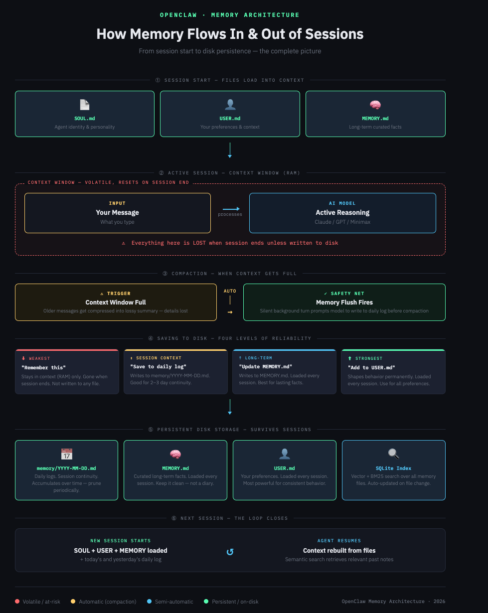

Build Your Personal AI Agent in 30 Days — No Coding Required
AI agents aren't just for engineers anymore. OpenClaw lets you build powerful automation without writing a single line of code.
If you can use Slack, you can build an AI agent.
This guide walks you through it step-by-step — no technical background required.
You're busy. You don't have time to learn programming just to automate your work. But you also don't want to feel left behind as AI transforms everything.
Here's the thing: You don't need to understand how AI works under the hood. You just need to know how to use it.
This guide is for you if:
OpenClaw makes AI accessible. It's designed for busy professionals like you — not engineers.
Here's exactly what you'll master in this guide:
Install and configure OpenClaw, navigate the dashboard, explore skills, connect messaging apps (Telegram, Slack, WhatsApp), and send your first command.
Anthropic (Claude), OpenAI (GPT), and Minimax explained. When to use each model type, cost optimization strategies, and how to switch models based on task complexity.
What SOUL.md is and why it matters. File structure explained (SOUL.md, USER.md, TOOLS.md, MEMORY.md). How to view and edit your agent's files. Giving your agent a personality that fits your needs.
How OpenClaw remembers conversations. Setting up memory that persists across sessions. Daily memory files explained. Best practices: always update memory before ending a session.
What skills are and how they work. Enabling built-in skills. Creating custom skills for your workflows. Skill best practices.
Let's get OpenClaw running on your machine. We'll cover installation, dashboard navigation, and sending your first command.
OpenClaw runs on Mac, Linux, or Raspberry Pi. Here's the quickstart:
# Clone the repo
git clone https://github.com/openclaw/openclaw.git
cd openclaw
# Install dependencies
npm install
# Run the setup
npm run setupOpenClaw lives in your messaging apps. Here's how to connect:
Once running, your dashboard shows:
Open your messaging app and try:
"Hey, what's the weather today?"
Your agent is now live and responding!
Let's create your first useful agent. It'll send you a daily summary every morning.
The prompt (copy and paste):
You are my Personal AI Assistant. Every morning at 8am, review my calendar, tasks, and any important updates. Then provide a brief, actionable summary covering:
- Top 3 priorities for today
- Any meetings that need preparation
- Follow-ups or replies I might be missing
Keep it short, clear, and actionable. Format as a bullet list.
That's it. Every morning you'll wake up to a personalized briefing. No coding required.
Agents = Independent workers with their own personality and memory
Sub-Agents = Task-specific helpers spawned by your main agent
Think of it like:
One of OpenClaw's superpowers is switching between AI models depending on what you need.
| Task | Recommended Model |
|---|---|
| Quick reminders, simple lookups | Mini/Haiku |
| Writing, editing, brainstorming | Sonnet/GPT-4o |
| Complex analysis, multi-step reasoning | Opus/o1 |
This is where most people get stuck. The docs don't explain it well, so here's the deep dive.
SOUL.md defines WHO your agent is. Not what it does — WHO it is. Think of it as the agent's personality, values, and voice.
TOOLS.md is your LOCAL setup — camera names, SSH aliases, TTS preferences. Things specific to YOUR environment that shouldn't be shared.
USER.md defines who YOU are — your preferences, context, goals. This helps your agent tailor its responses to you.
workspace/
├── SOUL.md ← Agent identity (personality, voice)
├── USER.md ← Who you're helping (preferences, context)
├── TOOLS.md ← Your local setup (environment-specific)
├── MEMORY.md ← Long-term memory (consolidated)
├── BRAIN.md ← Active projects and action items
├── memory/ ← Daily logs
│ └── YYYY-MM-DD.md
├── agents/ ← Sub-agents with their own configs
│ ├── warren/
│ │ ├── SOUL.md
│ │ └── PORTFOLIO.md
│ └── crawly/
│ ├── SOUL.md
│ └── SKILL.md
└── skills/ ← Shared skillsSOUL = WHO (identity, personality)
SKILL = HOW (workflow, tools, outputs)
TOOLS = WHERE (your local environment)
OpenClaw makes it easy to see and modify your agent's files:
agents/ with their own SOUL.mdThis is critical. Without proper memory setup, your agent forgets everything between sessions.

OpenClaw's memory system is entirely file-based. Everything lives in plain Markdown files. Here's what each file is for:
Defines who your agent is — its name, voice, personality, values. This is loaded every session and affects the overall tone and character of responses. Most people don't need to touch this often, but if you want your agent to feel more like a specific persona or role, this is where you define it.
This file is about you. Your communication style preferences, what you like and don't like, your role, your team, your working style. This gets loaded every session and directly shapes how the agent responds to you.
This is the most powerful file for consistent behavior. Want your agent to always respond concisely? Write it here.
Your agent's curated long-term memory. Think of it as the facts that should stay true over time: your name, your preferences, your tech stack, recurring project context, key decisions you've made. This file is loaded every session, so anything here is always available.
Key word is curated. Don't let this file become a diary. Keep it clean and factual. Aim for one-page onboarding doc.
Dated daily notes. Each day gets its own file. This is where running context lives: what you worked on today, decisions made, things in progress, context for picking up tomorrow.
These accumulate over time and can get noisy. Periodically prune or summarize older daily logs into MEMORY.md.
Some setups include a BRAIN.md for active projects and current action items — a mid-term layer between daily logs and long-term memory. Think of it as "what are we working on right now." Not all setups use this, but it's a useful pattern if you have ongoing multi-week projects.
What OpenClaw Does Automatically:
What Doesn't Happen Automatically:
During a normal session, the model doesn't continuously write to disk. It keeps things in context — in RAM — and only writes when you tell it to, when a skill specifically triggers a write, or when the compaction flush fires.
If you have a great conversation, make important decisions, share key context with your agent, then end the session without explicitly saving — most of that is gone. The next session starts fresh except for whatever was already in your files before the conversation started.
Every AI model has a context window — a maximum amount of text it can process at once. When a conversation gets long, older parts start to get compressed. That process is compaction.
The problem: Compression is lossy. Details get smoothed over. Specific facts that were in the raw conversation become vague summaries. If something important was only in the conversation and never written to a file, compaction can effectively delete it.
There are four levels of specificity you can use. The more specific you are, the more reliable the save.
Saying "remember that I use Vim" or "remember we decided X" technically works in-session. The agent keeps it in context. But there's no guarantee it writes it to a file. When the session ends, it's likely gone.
Use this only for things that only need to survive within the current conversation.
This explicitly directs the agent to write to today's memory/YYYY-MM-DD.md file. Good for things that matter for the next few days.
Say: "Save this to the daily log" or "Add to today's memory log that we decided to use Actix-web for the backend."
For anything you want to remember across weeks or months — project architecture, your tech stack, team members, key decisions — explicitly target MEMORY.md.
Say: "Update MEMORY.md with the fact that our backend uses Rust with Actix-web"
For behavioral preferences — how you want the agent to respond, what you don't like, formatting preferences — USER.md is the right target.
Say: "Add to USER.md that I always want copy-pastable commands, not theoretical explanations."
Before you close the chat, say:
"Update the daily log and MEMORY.md with what we worked on today, any decisions made, and what's pending."
This one habit will make 80% of memory issues disappear.
Always verify important saves actually happened. You can ask "What does MEMORY.md say right now?" or just open the file in your text editor. Since everything is plain Markdown, a 5-second check confirms whether the write happened.
If you want memory to work reliably without having to think about it every session, you can tune the configuration:
{
"agents": {
"defaults": {
"compaction": {
"reserveTokensFloor": 20000,
"memoryFlush": {
"enabled": true,
"softThresholdTokens": 4000,
"prompt": "Write lasting notes to memory/YYYY-MM-DD.md; reply NO_REPLY if nothing to store."
}
}
}
}
}The flush fires when your remaining tokens fall below reserveTokensFloor + softThresholdTokens. Increasing reserveTokensFloor gives the flush more room to operate.
One of the most underused features: add standing memory instructions to your AGENTS.md. Something like:
"After any exchange where a decision is made, a preference is expressed, or important technical context is shared, write a brief note to today's memory file."
| Goal | Command |
|---|---|
| Session continuity | "Save this to our daily log" |
| Long-term facts | "Update MEMORY.md with the fact that..." |
| Behavioral preferences | "Add to USER.md that I always want..." |
| End of session | "Update the daily log and MEMORY.md with what we worked on today, decisions made, and what's pending" |
Skills are reusable tool sets that give your agent new capabilities.
A skill is a collection of instructions and tools bundled together. Think of it like an app for your agent.
OpenClaw comes with useful skills:
skills/)Create a SKILL.md file in your skill folder:
# My Custom Skill
## What This Does
Brief description of the skill's purpose
## How to Use
- Command 1: What it does
- Command 2: What it does
## Tools Used
- tool1
- tool2Connect your agent to your existing knowledge base:
This guide is your starting point. To go deeper: